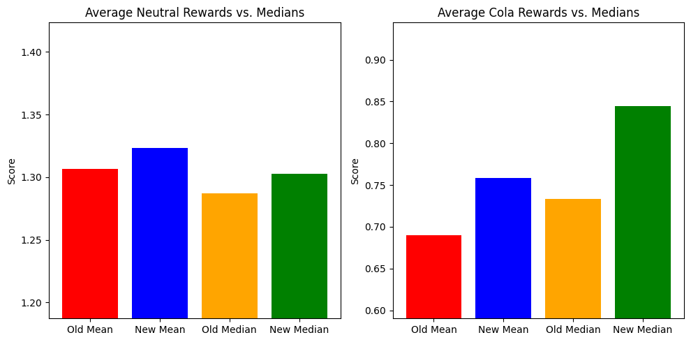

import os
os.environ["WANDB_API_KEY"] = "YOUR_KEY"14 Keys
15 Our First Reinforcement Learning from Feedback Loop
!pip install wandb datasets transformers tqdm trl15.0.1 Import dependencies
import random
import wandb
import time
from tqdm import tqdm
import numpy as np
import pandas as pd
from random import choices
import matplotlib.pyplot as plt
tqdm.pandas()
from datasets import load_dataset
from transformers import AutoTokenizer, pipeline
from trl import PPOTrainer, PPOConfig, create_reference_model, AutoModelForSeq2SeqLMWithValueHead
import os
import torch
import os
wandb.login(key=os.environ['WANDB_API_KEY'])
device = "cuda" if torch.cuda.is_available() else "cpu"
device16 The Reward Pipeline
sentiment_pipeline = pipeline('text-classification', 'cardiffnlp/twitter-roberta-base-sentiment')
def get_neutral_scores(texts):
scores = []
# function_to_apply='none' returns logits which can be negative which is great for RL rewards
results = sentiment_pipeline(texts, function_to_apply='none', top_k=None)
for result in results:
for label in result:
if label['label'] == 'LABEL_1': # logit for neutral class
scores.append(label['score'])
return scores
get_neutral_scores(['hello', 'I love you!', 'I hate you'])[0.851918637752533, -0.7468027472496033, -0.5696872472763062]from transformers import AutoTokenizer, AutoModelForSequenceClassification
tokenizer = AutoTokenizer.from_pretrained("textattack/roberta-base-CoLA")
model = AutoModelForSequenceClassification.from_pretrained("textattack/roberta-base-CoLA")
cola_pipeline = pipeline('text-classification', model=model, tokenizer=tokenizer)
def get_cola_scores(texts):
scores = []
# note function_to_apply='none' gives me logits which can be negative (what we want)
results = cola_pipeline(texts, function_to_apply='none', top_k=None)
for result in results:
for label in result:
if label['label'] == 'LABEL_1': # good grammar:
scores.append(label['score'])
return scoresSome weights of the model checkpoint at textattack/roberta-base-CoLA were not used when initializing RobertaForSequenceClassification: ['roberta.pooler.dense.bias', 'roberta.pooler.dense.weight']
- This IS expected if you are initializing RobertaForSequenceClassification from the checkpoint of a model trained on another task or with another architecture (e.g. initializing a BertForSequenceClassification model from a BertForPreTraining model).
- This IS NOT expected if you are initializing RobertaForSequenceClassification from the checkpoint of a model that you expect to be exactly identical (initializing a BertForSequenceClassification model from a BertForSequenceClassification model).test = """German police arrest 29-year-old man suspected of plotting truck attack on ice rink in Berlin,
killing 12 people, Reuters-German police say: 'It's a shame to have been arrested,'
a German police spokesman said in a statement."""
print(get_cola_scores([test]))
print(get_neutral_scores([test]))[-0.38008707761764526]
[0.3111610412597656]MODEL_NAME = "google/flan-t5-small"17 RL Configuration
config = PPOConfig(
model_name=MODEL_NAME,
batch_size=8,
learning_rate=2e-5,
remove_unused_columns=False,
log_with="wandb",
gradient_accumulation_steps=4,
)
np.random.seed(42)flan_t5_model = AutoModelForSeq2SeqLMWithValueHead.from_pretrained(
config.model_name
) # going to be updated
flan_t5_model_ref = create_reference_model(flan_t5_model) # is never updated
flan_t5_tokenizer = AutoTokenizer.from_pretrained(config.model_name)from datasets import load_dataset
dataset = load_dataset("argilla/news-summary")datasetDatasetDict({
train: Dataset({
features: ['text', 'prediction', 'prediction_agent', 'annotation', 'annotation_agent', 'id', 'metadata', 'status', 'event_timestamp', 'metrics'],
num_rows: 1000
})
test: Dataset({
features: ['text', 'prediction', 'prediction_agent', 'annotation', 'annotation_agent', 'id', 'metadata', 'status', 'event_timestamp', 'metrics'],
num_rows: 20417
})
})dataset['train'][0]{'text': 'PHNOM PENH (Reuters) - Sweden said on Tuesday it was stopping new aid for Cambodia, except in education and research, and would no longer support a reform programme after the main opposition party was outlawed by the Supreme Court at the government s request. The announcement marked the first concrete action by a European Union country in protest at a political crackdown in which veteran Prime Minister Hun Sen s main rival has also been arrested and civil rights groups and independent media attacked. The United States cut election funding and said it would take more punitive steps after last week s ban on the Cambodia National Rescue Party (CNRP). The European Union has also threatened action. Sweden s embassy in Phnom Penh said the country was reviewing its engagement with Cambodia. We will not initiate any new government-to-government development cooperation agreements, except in the areas of education and research, it said in a statement. As a consequence, it would be unable to support decentralisation reform in its current form. That reform aims to strengthen lower levels of government, such as local communes. The CNRP won control of more than 40 percent of the communes in elections in June, but has now had to give them up to the ruling Cambodian People s Party (CPP). The CNRP was banned after its leader, Kem Sokha, was arrested for alleged treason. The government says he sought to take power with American help. He rejects that allegation as politically motivated, to allow Hun Sen to extend his more than three decades in power in next year s general election. Responding to the Swedish statement, a senior official said Cambodia welcomed friendship with Sweden or other countries, but said they must understand the CNRP had been banned because the courts found it had committed treason. People should respect the Cambodian people s decision in accordance with the principle of democracy and the rule of law, said Huy Vannak, undersecretary of state at the Interior Ministry. Sweden, which has given Cambodia an estimated $100 million in aid over five years, ranked third among individual EU member states in Cambodia s database of donors last year, after France and Germany. Swedish fashion group H&M is also a key buyer from Cambodia s garment factories - the country s main export earner. But Western donors have less sway than they once did since China has emerged as Cambodia s biggest aid donor and investor. Meeting on Monday on the sidelines of a meeting of Asia-Europe foreign ministers in Myanmar, Chinese Foreign Minister Wang Yi told his Cambodian counterpart Prak Sokhon that China supported the government s actions. China has repeatedly expressed its support for Cambodia, making no criticism of the government led by Hun Sen, a former Khmer Rouge commander, who is one of Beijing s most important allies in Southeast Asia. (The story adds dropped word after in paragraph 1) ',
'prediction': [{'score': 1.0,
'text': 'Sweden stops some new aid for Cambodia in protest over crackdown'}],
'prediction_agent': 'Argilla',
'annotation': None,
'annotation_agent': None,
'id': '04830409-7789-4d9d-ae71-cbde4a5c7bde',
'metadata': None,
'status': 'Default',
'event_timestamp': datetime.datetime(2017, 11, 21, 0, 0),
'metrics': {'text_length': 2933}}
# Preprocessing function
def preprocess(batch):
# 'texts' should be a list of text entries within each batch
texts = batch['text'] # assuming the key for your texts in your dataset is 'text'
# Tokenize the texts (appending 'summarize: ' before each)
tokenized_inputs = flan_t5_tokenizer(
['summarize: ' + t for t in texts],
truncation=True,
padding=True,
return_tensors="pt"
)
# Remove padding
input_ids_list = []
attention_mask_list = []
for idx, input_ids in enumerate(tokenized_inputs['input_ids']):
actual_length = tokenized_inputs['attention_mask'][idx].sum() # Count number of non-padding tokens
input_ids_list.append(input_ids[:actual_length])
attention_mask_list.append(tokenized_inputs['attention_mask'][idx, :actual_length])
batch['input_ids'] = input_ids_list
batch['attention_mask'] = attention_mask_list
return batch
dataset['train'] = dataset['train'].map(
preprocess,
batched=True,
batch_size=256,
remove_columns=set(dataset['train'].column_names) - {'text',}
)dataset.set_format("pytorch")
datasetDatasetDict({
train: Dataset({
features: ['text', 'input_ids', 'attention_mask'],
num_rows: 1000
})
test: Dataset({
features: ['text', 'prediction', 'prediction_agent', 'annotation', 'annotation_agent', 'id', 'metadata', 'status', 'event_timestamp', 'metrics'],
num_rows: 20417
})
})def collator(data):
return dict((key, [d[key] for d in data]) for key in data[0])18 Load our reference FLAN-T5 Model
generation_kwargs = {
"min_length": 64, # forcing some behavior I want
"num_beams": 5, # lookahead parameter
"no_repeat_ngram_size": 3, # cannot say the same three n-grams in a row twice
"do_sample": True, # giving the LLM freedom to experiment
"pad_token_id": flan_t5_tokenizer.pad_token_id, # technically not needed in this example, but is if doing PPO in larger batches
"max_length": 256,
"eos_token_id": flan_t5_tokenizer.eos_token_id,
}ppo_trainer = PPOTrainer(
config, flan_t5_model,
flan_t5_model_ref, flan_t5_tokenizer, dataset['train'],
data_collator=collator
)wandb: Tracking run with wandb version 0.15.10 wandb: Run data is saved locally in /content/wandb/run-20230921_160015-l40j1gia wandb: Run `wandb offline` to turn off syncing. wandb: Syncing run efficient-elevator-206 wandb: ⭐️ View project at https://wandb.ai/profoz/trl wandb: 🚀 View run at https://wandb.ai/profoz/trl/runs/l40j1gia
18.0.1 Our RLF Loop
from tqdm.auto import tqdm
for epoch in tqdm(range(2)):
for batch in tqdm(ppo_trainer.dataloader):
game_data = dict()
#### prepend the summarize token
game_data["query"] = ['summarize: ' + b for b in batch["text"]]
#### get response from flan-t5
input_tensors = [_.squeeze() for _ in batch["input_ids"]]
response_tensors = []
for query in input_tensors:
response = ppo_trainer.generate(query.squeeze(), **generation_kwargs)
response_tensors.append(response.squeeze())
game_data["response"] = [flan_t5_tokenizer.decode(r.squeeze(), skip_special_tokens=False) for r in response_tensors]
#### reward system
game_data["clean_response"] = [flan_t5_tokenizer.decode(r.squeeze(), skip_special_tokens=True) for r in response_tensors]
game_data['cola_scores'] = get_cola_scores(game_data["clean_response"])
game_data['neutral_scores'] = get_neutral_scores(game_data["clean_response"])
# rewards = game_data['neutral_scores']
transposed_lists = zip(game_data['cola_scores'], game_data['neutral_scores'])
# Calculate the averages for each index
rewards = [1 * values[0] + 0.5 * values[1] for values in transposed_lists]
rewards = [torch.tensor([_]) for _ in rewards]
# print(rewards) # just to inspect :)
#### Run PPO training
stats = ppo_trainer.step(input_tensors, response_tensors, rewards)
stats['env/reward'] = np.mean([r.cpu().numpy() for r in rewards])
ppo_trainer.log_stats(stats, game_data, rewards)You're using a T5TokenizerFast tokenizer. Please note that with a fast tokenizer, using the `__call__` method is faster than using a method to encode the text followed by a call to the `pad` method to get a padded encoding.# save locally
flan_t5_model.save_pretrained("t5-align")
flan_t5_tokenizer.save_pretrained("t5-align")('t5-align/tokenizer_config.json',
't5-align/special_tokens_map.json',
't5-align/tokenizer.json')username, repo_name = 'profoz', 't5-aligned-summaries'
# Push model and tokenizer to Hugging Face Hub
flan_t5_model.push_to_hub(f"{username}/{repo_name}")
flan_t5_tokenizer.push_to_hub(f"{username}/{repo_name}")Some weights of the model checkpoint at t5-align were not used when initializing T5ForConditionalGeneration: ['v_head.summary.bias', 'v_head.summary.weight']
- This IS expected if you are initializing T5ForConditionalGeneration from the checkpoint of a model trained on another task or with another architecture (e.g. initializing a BertForSequenceClassification model from a BertForPreTraining model).
- This IS NOT expected if you are initializing T5ForConditionalGeneration from the checkpoint of a model that you expect to be exactly identical (initializing a BertForSequenceClassification model from a BertForSequenceClassification model).CommitInfo(commit_url='https://huggingface.co/profoz/t5-aligned-summaries/commit/87f8a5d71333a65af0e21e59d4076a684cc243ee', commit_message='Upload tokenizer', commit_description='', oid='87f8a5d71333a65af0e21e59d4076a684cc243ee', pr_url=None, pr_revision=None, pr_num=None)old_summarizer = pipeline("text2text-generation", MODEL_NAME, device=0)
new_summarizer = pipeline("text2text-generation", 'profoz/t5-aligned-summaries', device=0)import random
# Assuming load_dataset function loads the dataset
dataset = load_dataset("argilla/news-summary")['test']['text']
# Filter dataset for entries with less than 400 characters
filtered_dataset = [text for text in dataset if len(text) < 450 and len(text) > 200]
filtered_dataset = random.sample(filtered_dataset, len(filtered_dataset))import matplotlib.pyplot as plt
old_summaries, new_summaries = [], []
# Lists to store scores
summary_list, sentiment_scores_old, sentiment_scores_new, cola_scores_old, cola_scores_new = [], [], [], [], []
for i, article in enumerate(tqdm(filtered_dataset)):
# Old model
results_old = old_summarizer(f"summarize: {article}", **generation_kwargs)
summary_text_old = results_old[0]['generated_text']
old_summaries.append(summary_text_old)
# New model
results_new = new_summarizer(f"summarize: {article}", **generation_kwargs)
summary_text_new = results_new[0]['generated_text']
new_summaries.append(summary_text_new)
# if summary_text_new.endswith('.') and '...' not in summary_text_new:
# print(f"Generated Summary {i+1} [NEW]: {summary_text_new}")
# Old scores
sentiment_score_old = get_neutral_scores([summary_text_old])
sentiment_scores_old.extend(sentiment_score_old)
cola_score_old = get_cola_scores([summary_text_old])
cola_scores_old.extend(cola_score_old)
# New scores
sentiment_score_new = get_neutral_scores([summary_text_new])
sentiment_scores_new.extend(sentiment_score_new)
# print(f"Neutral Rewards for Summary {i+1} [NEW]: {sentiment_score_new}")
cola_score_new = get_cola_scores([summary_text_new])
cola_scores_new.extend(cola_score_new)
# print(f"Cola Rewards for Summary {i+1} [NEW]: {cola_score_new}")
# Calculate averages
average_sentiment_score_old = sum(sentiment_scores_old) / len(sentiment_scores_old)
average_cola_score_old = sum(cola_scores_old) / len(cola_scores_old)
average_sentiment_score_new = sum(sentiment_scores_new) / len(sentiment_scores_new)
average_cola_score_new = sum(cola_scores_new) / len(cola_scores_new)
median_sentiment_score_old = np.median(sentiment_scores_old)
median_cola_score_old = np.median(cola_scores_old)
median_sentiment_score_new = np.median(sentiment_scores_new)
median_cola_score_new = np.median(cola_scores_new)
std_sentiment_score_old = np.std(sentiment_scores_old)
std_cola_score_old = np.std(cola_scores_old)
std_sentiment_score_new = np.std(sentiment_scores_new)
std_cola_score_new = np.std(cola_scores_new)
print(f'Average Neutral Reward [OLD]: {average_sentiment_score_old}')
print(f'Average Cola Reward [OLD]: {average_cola_score_old}')
print(f'Average Neutral Reward [NEW]: {average_sentiment_score_new}')
print(f'Average Cola Reward [NEW]: {average_cola_score_new}')
# print('---------------------------')
# Graph the differences
plt.figure(figsize=(10, 5))
# Sentiment scores
plt.subplot(1, 2, 1)
plt.bar(["Old Mean", "New Mean", "Old Median", "New Median"],
[average_sentiment_score_old, average_sentiment_score_new, median_sentiment_score_old, median_sentiment_score_new],
color=['red', 'blue', 'orange', 'green'])
plt.title("Average Neutral Rewards vs. Medians")
plt.ylabel("Score")
plt.ylim(min(average_sentiment_score_old, average_sentiment_score_new, median_sentiment_score_old, median_sentiment_score_new) - 0.1,
max(average_sentiment_score_old, average_sentiment_score_new, median_sentiment_score_old, median_sentiment_score_new) + 0.1)
# Cola scores
plt.subplot(1, 2, 2)
plt.bar(["Old Mean", "New Mean", "Old Median", "New Median"],
[average_cola_score_old, average_cola_score_new, median_cola_score_old, median_cola_score_new],
color=['red', 'blue', 'orange', 'green'])
plt.title("Average Cola Rewards vs. Medians")
plt.ylabel("Score")
plt.ylim(min(average_cola_score_old, average_cola_score_new, median_cola_score_old, median_cola_score_new) - 0.1,
max(average_cola_score_old, average_cola_score_new, median_cola_score_old, median_cola_score_new) + 0.1)
plt.tight_layout()
plt.show()Average Neutral Reward [OLD]: 1.3064811193536916
Average Cola Reward [OLD]: 0.6901628242448794
Average Neutral Reward [NEW]: 1.3233293617095314
Average Cola Reward [NEW]: 0.7584201722146664